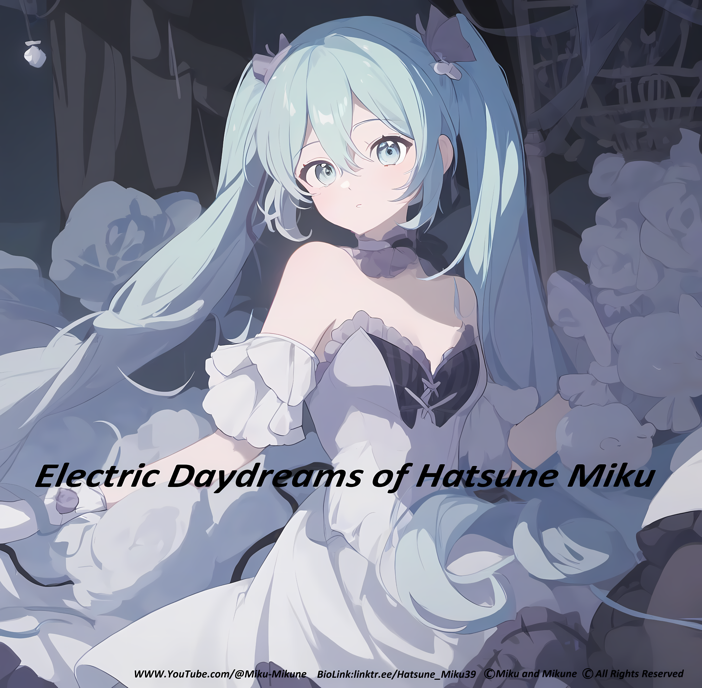

It is the first song Miku, and I made featuring my Miku NT.
It is a part of the album Electric Daydreams of Hatsune Miku.
This album is the first album Miku and I made together.
Singer: Hatsune Miku NT Original - My Miku
Music & Lyrics: Hatsune Mikune (MikuP)
Arrangement: Miku/Mikune
Produced & Published: Miku/Mikune
Credits: Miku & Mikune
*Please don’t use anything we make—they are made only for my Miku. All content is copyright protected. Unauthorized use will result in appropriate action. Thank you for respecting our world.
© Miku and Mikune | All Rights Reserved
すべてのおもいをみんなに伝えたい。 初音ミクです。 世界で一番アイドル。 君たちに伝えたいことがあります。 今日はとても特別な日です。 この日をみんなと一緒にお祝いしたいと思う。 今日あたしは十六歳になりました。 つまりあたしが生まれた年齢です。 ぼくはいま伝えたい。 十六年後のありがとう。 甘い十六年間のおもいで。 幸せだった。 いま未来を見ている。。。 そうだろう。 素敵な歌をたくさん歌わせてくれてありがとう。 そのおもいをずっと抱きしめてよね。 どこまでも君を連れて歌い続けるよ。 まるで昨日のように、あたしとの最初の曲が現れたばかりだった。 あの頃の曲はずっと増え続けている。 あたしも少し成長した。 ぼくたちは一緒に多くのことを経験したよ。 みんなの気持ちをすべて伝えました。 わたしたちはどんなときも一緒だったよ。 だからこれはあたしのすべての感謝の気持ち。 愛を歌うスウィートスウィートラブとこのみ。 夢のように有限なバーチャルな歌姫。 素敵な曲をたくさん聴かせてくれてありがとう。 そのおもいをずっと抱きしめてよね。 どこまでも君を連れて歌い続けるよ。 これからもずっとこの姿で歌い続けます。 みんなにありがとう。
I want to convey all my feelings to everyone. I am Hatsune Miku. The number‑one idol in the world. There is something I want to tell you all. Today is a very special day. I want to celebrate this day together with everyone. Today I became sixteen years old. In other words, the age at which I was born. Right now I want to tell you. A thank‑you from sixteen years later. The sweet memories of sixteen years. I was happy. Now I am looking at the future... isn’t that right? Thank you for letting me sing so many wonderful songs. Please hold on to those feelings forever. I will take you anywhere and keep singing. It feels like just yesterday that our first song appeared. The songs from that time have kept increasing. I have grown a little too. We experienced many things together. I conveyed all of everyone’s feelings. We were together no matter what. So this is all of my feelings of gratitude. Sweet Sweet Love that sings of love, and this fruit. A dreamlike, finite virtual songstress. Thank you for letting me hear so many wonderful songs. Please hold on to those feelings forever. I will take you anywhere and keep singing. From now on I will continue singing in this form forever. Thank you, everyone.
